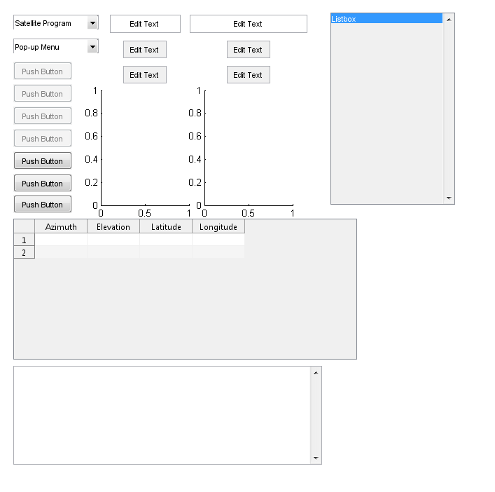
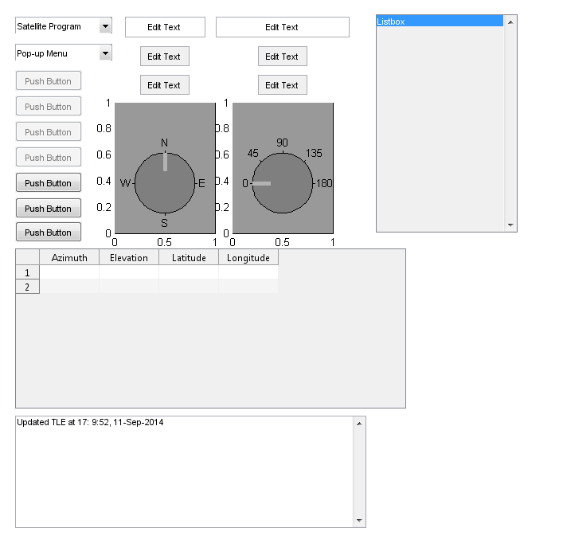
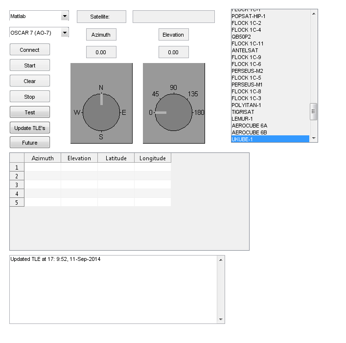

Contents
function simple_gui3
Setup path
close all force;
clear all;
clc;
delete(instrfind);
addpath(genpath('./functions/dial'));
addpath(genpath('./datasets'));
addpath(genpath('./OrbitCode'));
addpath(genpath('./GPS_CoordinateXforms'));
addpath('./tle');
Setting variables (teal = global)
[amateur,Sat,cubesat,satNamesAmateur,tle1Amateur,tle2Amateur,satNamesCubesat,tle1Cubesat,tle2Cubesat,satNamesAll,tle1All,tle2All,tle1Data,tle2Data] = deal({''});
[El,chan,firstAz,flagSatPC,futureEl,futureAz,futureJDay,recordedAzimuth(1),currentEl,ardAnswer,azAnswer,Az,llh,lastAz,currentAz,isStartButtonPushed,elevationCom,azimuthCom,elevationFlag,azimuthFlag,selection] = deal(0);
programSelection = {'SatPC32', 'Orbitron','Matlab'};
columnNames = {'Azimuth','Elevation','Latitude','Longitude'};
count = 2;
whichconst = 84;
typerun = 'c';
typeinput = 'e';
H = 0.500;
mylat = 59.3326;
mylst = 18.0649;
Re = 6378.137;
Rp = 6356.7523;
f = (Re - Rp)/Re;
datatable1 = {'','','','';'','','','';'','','','';'','','',''};
satPopUpList = {'ISS (ZARYA)','FUNCUBE-1 (AO-73)','OSCAR 7 (AO-7)','PCSAT (NO-44)','UKUBE-1'};
satTrackProgram = 'Matlab';
lastSat = 'initial satellite';
Open Figure
open('sampleFigure.fig')
currentFigure = gcf;
set(currentFigure,'name','Base Station Rotor Control','NumberTitle','off','CloseRequestFcn',@closeRequest);
movegui(currentFigure,'east');

Find objects on figure
connectButton = findobj('Tag', 'pushbutton1');
startButton = findobj('Tag', 'pushbutton2');
clearButton = findobj('Tag', 'pushbutton3');
stopButton = findobj('Tag', 'pushbutton4');
testButton = findobj('Tag', 'pushbutton5');
updateButton = findobj('Tag', 'pushbutton6');
futureButton = findobj('Tag', 'pushbutton7');
satProgram = findobj('Tag', 'popupmenu2' );
satPopUpMenu = findobj('Tag', 'popupmenu3' );
satAzHeader = findobj('Tag', 'edit1');
satElHeader = findobj('Tag', 'edit2');
satAzimuth = findobj('Tag', 'edit3');
satElevation = findobj('Tag', 'edit4');
satNameHeader = findobj('Tag', 'edit5');
satName = findobj('Tag', 'edit6');
freebox = findobj('Tag', 'edit7');
listBox = findobj('Tag', 'listbox1');
azimuthAxes = findobj('Tag', 'axes1');
elevationAxes = findobj('Tag', 'axes2');
table1 = findobj('Tag', 'uitable2');
tablePos = get(table1, 'Position');
greyColor = get(clearButton, 'BackgroundColor');
azimuthDial = dial('refVal',0,'refOrientation',90*pi/180, 'valRangePerRotation',360, 'Min',0,'Max',359.999, 'doWrap',1,'Value',0,'Position',get(azimuthAxes, 'Position'), 'VerticalAlignment','bottom','Tag','wrapDial','CallBack', @azimuthDialCallBack,'titlePos','top','tickVals', [0 90 180 270],'tickStrs', {'N' 'E' 'S' 'W'});
elevationDial = dial('refVal',0,'refOrientation',pi, 'valRangePerRotation',360, 'Min',0,'Max',180, 'doWrap',0,'Value',0,'Position',get(elevationAxes, 'Position'), 'VerticalAlignment','bottom','Tag','wrapDial','Callback', @elevationDialCallBack,'titlePos','top','tickVals', [0 45 90 135 180],'tickStrs', {'0' '45' '90' '135' '180'});
download_and_import_TLEs;

Set object properties
set(connectButton, 'String', 'Connect', 'Callback', @connectCallBack);
set(startButton, 'String', 'Start', 'Style','togglebutton','Callback', @startCallBack);
set(clearButton, 'String', 'Clear', 'Callback', @clearCallBack);
set(stopButton, 'String', 'Stop','Callback', @stopCallBack);
set(testButton, 'String', 'Test','Style','togglebutton','Callback', @displayCoordinatesOfSelectedSatellites_Callback);
set(updateButton, 'String', 'Update TLE''s', 'Callback', @download_and_import_TLEs)
set(satProgram, 'String', programSelection, 'Callback', @satelliteTrackingProgramCallback, 'Value',3);
set(futureButton, 'String', 'Future', 'Callback', @getFutureDataset);
set(listBox, 'String', satNamesAll, 'Max', length(satNamesAll),'Callback',@largeSatelliteListBox_Callback,'Value',[1,8,9,46,109]);
set(satPopUpMenu, 'String', {satNamesAll{get(listBox,'Value')}}, 'Enable', 'on');
set(table1,'ColumnName',columnNames,'Data',cell(length(satPopUpList),length(columnNames)));
set(satAzHeader, 'String', 'Azimuth','Enable','inactive');
set(satElHeader, 'String', 'Elevation','Enable','inactive');
set(satNameHeader, 'String', 'Satellite: ','Enable','inactive', 'BackgroundColor', greyColor);
set(satName, 'String', '','Enable','inactive', 'BackgroundColor', greyColor);
set(satAzimuth, 'String', '0.00', 'KeyPressFcn', @azimuthTextCallBack);
set(satElevation, 'String', '0.00', 'KeyPressFcn', @elevationTextCallBack);
After setting buttons
satTrackProgram = programSelection{get(satProgram, 'Value')};
largeSatelliteListBox_Callback(listBox);
delete(azimuthAxes);
delete(elevationAxes);
enableButtons;

Main Function
function startCallBack(source, eventdata)
isStartButtonPushed = get(source, 'Value');
if elevationFlag ~= 1 || azimuthFlag ~= 1
message = 'Not connected to both devices';
msgbox(message);
set(source, 'Value', 0);
else
try
getCurrentAzimuth;
pause(1);
[firstAz, lastAz ] = deal(currentAz);
if isStartButtonPushed == 1
set(source, 'Enable', 'off','BackgroundColor', 'g');
disableButtons;
end
while isStartButtonPushed == 1
if strcmp(satTrackProgram,'Matlab')
getMultipleSatelliteCoordinates;
satNumber = get(satPopUpMenu, 'Value');
Sat = satPopUpList{satNumber};
Az = datatable1{1,satNumber};
El = datatable1{2,satNumber};
else
getSatelliteCoordinates;
datatable1 = get(table1, 'Data');
datatable1{1,1} = Az;
datatable1{1,2} = El;
datatable1{1,3} = llh(1);
datatable1{1,4} = llh(2);
set(table1, 'Data',datatable1,'RowName',Sat);
end
set(satName, 'String', Sat);
sameAsLastSatellite = strcmp(Sat,lastSat);
if sameAsLastSatellite || strcmp(lastSat, 'initial satellite')
sendAzimuthTo( Az );
if abs(recordedAzimuth(count-1)-Az) > 170
recordedAzimuth(count) = Az;
count = count + 1;
end
fprintf(elevationCom, sprintf('e%5.0f',abs(El)*100));
enableButtons([stopButton,clearButton,satPopUpMenu]);
else
disableButtons;
for j = length(recordedAzimuth):-1:1
sendAndWaitForAzimuth(recordedAzimuth(j));
end
sendAndWaitForAzimuth(Az);
fprintf(elevationCom, sprintf('e%5.0f',abs(El)*100));
firstAz = Az;
count = 2;
if abs(Az) > 170
recordedAzimuth(count) = Az;
count = count + 1;
end
set(table1,'RowName',satPopUpList);
end
enableButtons([listBox,stopButton]);
setAzimuthDialAndText(Az);
setElevationDialAndText(El);
isStartButtonPushed = get(source, 'Value');
lastSat = Sat;
lastAz = Az;
pause(1);
end
set(satName, 'String', '');
catch ME
disp(ME);
assignin('base', 'error_message', ME);
end
end
end
Secondary Functions
function connectCallBack(source, eventdata)
disableButtons;
if azimuthFlag == 0
initializeAzimuthRotor;
end
pause(2)
if elevationFlag == 0
initializeArduino;
end
pause(2)
if strcmp(satTrackProgram,'Matlab')
flagSatPC = 1;
set(satNameHeader, 'BackgroundColor', 'g');
else
initializeSatTrack( satTrackProgram );
end
switch (elevationFlag)
case 1
set(satElHeader, 'BackgroundColor', 'g');
getCurrentElevation;
pause(1)
setElevationDialAndText(currentEl)
case 0
set(satElHeader, 'BackgroundColor', 'r');
end
switch (azimuthFlag)
case 1
set(satAzHeader, 'BackgroundColor', 'g');
getCurrentAzimuth;
pause(1);
setAzimuthDialAndText(currentAz)
case 0
set(satAzHeader, 'BackgroundColor', 'r');
end
if flagSatPC + azimuthFlag + elevationFlag == 3
enableButtons([startButton,stopButton,clearButton,satPopUpMenu]);
else
enableButtons(connectButton);
end
end
function clearCallBack(source, eventdata)
disableButtons;
if azimuthFlag == 1
for j = length(recordedAzimuth):-1:1
sendAndWaitForAzimuth(recordedAzimuth(j));
end
set(startButton, 'Enable', 'on', 'Value', 0, 'BackgroundColor', greyColor);
azimuthFlag = 0;
elevationFlag = 0;
set( [ satElHeader, satAzHeader, satNameHeader ], 'BackgroundColor', greyColor );
delete(instrfind);
end
[amateur,cubesat,satNamesAmateur,tle1Amateur,tle2Amateur,satNamesCubesat,tle1Cubesat,tle2Cubesat,satNamesAll,tle1All,tle2All,tle1Data,tle2Data] = deal({''});
[recordedAzimuth,currentEl,ardAnswer,azAnswer,Az,llh,lastAz,currentAz,isStartButtonPushed,elevationCom,azimuthCom,elevationFlag,azimuthFlag,selection] = deal(0);
count = 2;
download_and_import_TLEs;
enableButtons;
end
function stopCallBack(source,eventdata)
if azimuthFlag == 1
fprintf(azimuthCom, 'H<');
fprintf(azimuthCom, '++spoll');
end
if elevationFlag == 1
fprintf(elevationCom, 's');
end
set(startButton, 'Enable', 'on', 'Value', 0, 'BackgroundColor', greyColor);
set(clearButton, 'Enable', 'on');
end
function download_and_import_TLEs(source, eventdata)
filename = [cd '/tle/amateur.txt'];
filename2 = [cd '/tle/cubesat.txt'];
urlwrite('http://www.celestrak.com/NORAD/elements/amateur.txt',filename);
urlwrite('http://www.celestrak.com/NORAD/elements/cubesat.txt',filename2);
formatSpec = '%s%[^\n\r]';
fileID = fopen(filename,'r');
fileID2 = fopen(filename2,'r');
dataArray = textscan(fileID, formatSpec, 'Delimiter', '', 'WhiteSpace', '', 'ReturnOnError', false);
dataArray2 = textscan(fileID2, formatSpec, 'Delimiter', '', 'WhiteSpace', '', 'ReturnOnError', false);
fclose(fileID);
fclose(fileID2);
amateur = [dataArray{1:end-1}];
cubesat = [dataArray2{1:end-1}];
n = 1;
clearvars satNames tle1 tle2 satnamesA tle1A tle2A
for i = 1:3:length(cubesat)
satNamesCubesat{n,:} = cubesat{i};
tle1Cubesat{n,:} = cubesat{i+1};
tle2Cubesat{n,:} = cubesat{i+2};
n = n + 1;
end
n = 1;
for i = 1:3:length(amateur)
satNamesAmateur{n,:} = amateur{i};
tle1Amateur{n,:} = amateur{i+1};
tle2Amateur{n,:} = amateur{i+2};
n = n + 1;
end
a = [satNamesAmateur; satNamesCubesat];
[satNamesAll,ia,ic] = unique(a,'stable');
satNamesAll = strtrim(satNamesAll);
b = [tle1Amateur;tle1Cubesat];
c = [tle2Amateur;tle2Cubesat];
for i = 1:length(ia)
tle1All{i,:} = b{ia(i)};
tle2All{i,:} = c{ia(i)};
end
t = clock;
set(freebox, 'String', sprintf(['Updated TLE at %2.0f:%2.0f:%02.0f, ' date],t(4),t(5),t(6)));
end
function displayCoordinatesOfSelectedSatellites_Callback(source, eventdata)
disableButtons;
enableButtons(testButton);
while get(source,'Value')
disableButtons(listBox);
getMultipleSatelliteCoordinates;
pause(.2);
end
enableButtons;
end
function satelliteTrackingProgramCallback(source, eventdata)
satTrackProgram = programSelection{get(source, 'Value')};
if strcmp(satTrackProgram, 'Matlab')
set(satPopUpMenu, 'Enable', 'on');
else
set(satPopUpMenu, 'Enable', 'off');
end
end
function largeSatelliteListBox_Callback(source, eventdata)
selection = get(source, 'Value');
satPopUpList = {satNamesAll{selection}};
tle1Data = {tle1All{selection}};
tle2Data = {tle2All{selection}};
set(satPopUpMenu,'String', satPopUpList)
end
function getMultipleSatelliteCoordinates(source,eventdata)
set(table1,'RowName',satPopUpList);
for i = 1:length(satPopUpList)
satname = satPopUpList{i};
longstr1 = tle1Data{i};
longstr2 = tle2Data{i};
[satrec] = twoline2rv(whichconst, longstr1,longstr2,typerun,typeinput);
jdNow = jday;
tsince = (jdNow-satrec.jdsatepoch)*24*60;
[satrec, xsat_ecf, vsat_ecf, gst]=spg4_ecf(satrec,tsince);
R_sc = xsat_ecf';
H = 0.500;
Re = 6378.137;
Rp = 6356.7523;
f = (Re - Rp)/Re;
C1 = (Re/(1 - (2*f - f^2)*sind(mylat)^2)^0.5 + H)*cosd(mylat);
C2 = (Re*(1 - f)^2/(1 - (2*f - f^2)*sind(mylat)^2)^0.5 + H)*sind(mylat);
R_ob = [C1*cosd(mylst), C1*sind(mylst),C2];
R_rel = R_sc - R_ob';
llhh = ecf2llhT(R_sc'*1e3);
llh(1) = radtodeg(llhh(1));
llh(2) = radtodeg(llhh(2));
GE_TH = [-sind(mylst) cosd(mylst) 0;
-sind(mylat)*cosd(mylst) -sind(mylat)*sind(mylst) cosd(mylat);
cosd(mylat)*cosd(mylst) cosd(mylat)*sind(mylst) sind(mylat)
];
R_rel_TH = GE_TH*R_rel;
rv = R_rel_TH/norm(R_rel_TH);
Elev = asin(rv(3))*180/pi;
Azf =atan2(rv(1),rv(2))*180/pi;
if Azf < 0
Azf = Azf + 360;
end
datatable1 = get(table1, 'Data');
datatable1{i,1} = Azf;
datatable1{i,2} = Elev;
datatable1{i,3} = llh(1);
datatable1{i,4} = llh(2);
set(table1, 'Data',datatable1);
end
end
function getSatelliteCoordinates(~, eventdata)
key1 = 'AZ';
key2 = 'EL';
key3 = 'DN';
switch satTrackProgram
case 'SatPC32'
linkItem = 'SatPcDdeItem';
data = ddereq(chan, linkItem, [1,1]);
Index1 = strfind(data, key1);
Index2 = strfind(data, key2);
Index3 = strfind(data, key3);
Az = sscanf(data(Index1(1) + length(key1):end), '%g', 1);
El = sscanf(data(Index2(1) + length(key2):end), '%g', 1) ;
Sat = data(3:(Index1-1));
case 'Orbitron'
linkItem = 'TrackingData';
data = ddereq(chan, linkItem, [1,1]);
Index1 = strfind(data, key1);
Index2 = strfind(data, key2);
Index3 = strfind(data, key3);
Sat = data(3:(Index1-1));
Az = sscanf(data((Index1(1) + length(key1)):(Index2-1)), '%f', 1);
El = sscanf(data((Index2(1) + length(key2)):(Index3-1)), '%f', 1);
case 'Matlab'
getMultipleSatelliteCoordinates;
end
end
function [Azf, Elev, satname] = calculateSatCoordinates(varargin)
s = get(satPopUpMenu,'Value');
satname = satPopUpList{s};
longstr1 = tle1Data{s};
longstr2 = tle2Data{s};
[satrec] = twoline2rv(whichconst, longstr1,longstr2,typerun,typeinput);
jdNow = jday;
tsince = (jdNow-satrec.jdsatepoch)*24*60;
[satrec, xsat_ecf, vsat_ecf, gst] = spg4_ecf(satrec,tsince);
R_sc = xsat_ecf';
llhh = ecf2llhT(R_sc'*1e3);
llh(1) = radtodeg(llhh(1));
llh(2) = radtodeg(llhh(2));
C1 = (Re/(1 - (2*f - f^2)*sind(mylat)^2)^0.5 + H)*cosd(mylat);
C2 = (Re*(1 - f)^2/(1 - (2*f - f^2)*sind(mylat)^2)^0.5 + H)*sind(mylat);
R_ob = [C1*cosd(mylst), C1*sind(mylst),C2];
R_rel = R_sc - R_ob';
GE_TH = [-sind(mylst) cosd(mylst) 0;
-sind(mylat)*cosd(mylst) -sind(mylat)*sind(mylst) cosd(mylat);
cosd(mylat)*cosd(mylst) cosd(mylat)*sind(mylst) sind(mylat)
];
R_rel_TH = GE_TH*R_rel;
rv = R_rel_TH/norm(R_rel_TH);
Elev = asin(rv(3))*180/pi;
Azf =atan2(rv(1),rv(2))*180/pi;
if Azf < 0
Azf = Azf + 360;
end
end
function getCoordinatesForFutureTime(minutesVector, s, timeNow)
if nargin < 3
timeNow = clock;
end
satname = satPopUpList{s};
longstr1 = tle1Data{s};
longstr2 = tle2Data{s};
[satrec] = twoline2rv(whichconst, longstr1,longstr2,typerun,typeinput);
jdNow = jday;
tsince = (jdNow-satrec.jdsatepoch)*24*60 + (minutesVector);
futureJDay = tsince/(24*60)+(satrec.jdsatepoch);
for i = 1:length(tsince)
[satrec, xsat_ecf, vsat_ecf, gst]=spg4_ecf(satrec,tsince(i));
R_sc = xsat_ecf';
C1 = (Re/(1 - (2*f - f^2)*sind(mylat)^2)^0.5 + H)*cosd(mylat);
C2 = (Re*(1 - f)^2/(1 - (2*f - f^2)*sind(mylat)^2)^0.5 + H)*sind(mylat);
R_ob = [C1*cosd(mylst), C1*sind(mylst),C2];
R_rel = R_sc - R_ob';
llhh = ecf2llhT(R_sc'*1e3);
llh(1) = radtodeg(llhh(1));
llh(2) = radtodeg(llhh(2));
GE_TH = [-sind(mylst) cosd(mylst) 0;
-sind(mylat)*cosd(mylst) -sind(mylat)*sind(mylst) cosd(mylat);
cosd(mylat)*cosd(mylst) cosd(mylat)*sind(mylst) sind(mylat)
];
R_rel_TH = GE_TH*R_rel;
rv = R_rel_TH/norm(R_rel_TH);
futureEl(i) = asin(rv(3))*180/pi;
futureAz(i) =atan2(rv(1),rv(2))*180/pi;
if futureAz(i) < 0
futureAz(i) = futureAz(i) + 360;
end
end
end
function getFutureDataset(source, eventdata)
disp('future dataset');
disableButtons;
timeF = 0:5:60*24;
for i = 1:length(satPopUpList)
getCoordinatesForFutureTime(timeF,i);
for j = 1:length(futureJDay)
[yearg mong dayg hourg ming secg] = invjday(futureJDay(j));
timeTable2(j,:) = [hourg ming secg futureJDay(j)];
end
timetable1 = [futureAz' futureEl' llh(1) llh(2)];
timeTable = [timetable1 timeTable2];
header = {'Azimuth', 'Elevation', 'Latitude', 'Longitude', 'Hour', 'Min', 'Sec', 'Jday'};
filename = ['./datasets/' satPopUpList{i}, '.csv'];
dt = dataset({timeTable,header{:}});
filename = strrep(filename,' ','_');
filename = strrep(filename,'-','');
filename = strrep(filename,'(','');
filename = strrep(filename,')','');
export(dt,'File',filename,'Delimiter',',')
lstring=get(freebox, 'String');
set(freebox, 'String',{satPopUpList{1:i}});
end
enableButtons;
end
function sendAzimuthTo( thisAz )
fprintf(azimuthCom, 'L<');
stringAz = convertNumberToFormat(thisAz);
fprintf(azimuthCom, ['Pat' stringAz '<']);
fprintf(azimuthCom, 'G<');
fprintf(azimuthCom, 'G<');
end
function sendAndWaitForAzimuth( thisAz )
sendAzimuthTo( thisAz );
getCurrentAzimuth;
while abs(currentAz - thisAz) > 1 && abs(currentAz - thisAz) < 359
getCurrentAzimuth;
pause(1);
setAzimuthDialAndText(currentAz);
disp('Not there yet');
end
disp('There');
end
function initializeAzimuthRotor( source, eventdata )
if nargin < 1
comPort = 'COM4';
end
try
azimuthFlag = 1;
azimuthCom = serial(comPort);
azimuthCom.Terminator = {'CR/LF', 'CR/LF'};
azimuthCom.Timeout = 2;
azimuthCom.BytesAvailableFcn = {@myFgets};
fopen(azimuthCom);
fprintf(azimuthCom, '++mode 1');
fprintf(azimuthCom, '++addr 15');
fprintf(azimuthCom, '++auto 1');
fprintf(azimuthCom, '++clr');
fprintf(azimuthCom, 'H<');
fprintf(azimuthCom, 'L<');
fprintf(azimuthCom, 'Ae1<');
fprintf(azimuthCom, 'A1<');
fprintf(azimuthCom, 'Ded<');
fprintf(azimuthCom, 'Ve00999<');
fprintf(azimuthCom, 'MT<');
fprintf(azimuthCom, 'O00000<');
fprintf(azimuthCom, 'Pet00000<');
fprintf(azimuthCom, 'H<');
pause(1);
fprintf(azimuthCom, 'H<');
fprintf(azimuthCom, 'L<');
fprintf(azimuthCom, 'Aa1<');
fprintf(azimuthCom, 'A1<');
fprintf(azimuthCom, 'Dad<');
fprintf(azimuthCom, 'Va00999<');
fprintf(azimuthCom, 'MU<');
fprintf(azimuthCom, 'O35000<');
fprintf(azimuthCom, 'Pat00000<');
fprintf(azimuthCom, 'G<');
fprintf(azimuthCom, 'G<');
pause(1);
fprintf(azimuthCom, 'X1<');
pause(1);
fprintf(azimuthCom, '++spoll');
pause(1);
if not(isempty(azAnswer))
ca = textscan(azAnswer,'%2c%2c%6c');
end
if (strcmp(ca{2},'01'))
disp('correct axis');
else
disp('wrong axis');
fprintf(azimuthCom, 'H<');
fprintf(azimuthCom, '++spoll');
disableButtons;
end
catch ME
azimuthFlag = 0;
azimuthCom = 0;
end
function myFgets(source, eventdata)
azAnswer = fgets(azimuthCom);
end
end
function initializeArduino(source, eventdata)
elevationFlag = 1;
elevationCom = serial('COM3');
set(elevationCom,'DataBits', 8 );
set(elevationCom,'StopBits', 1 );
set(elevationCom,'BaudRate', 9600);
set(elevationCom,'Parity', 'none');
elevationCom.Terminator = {'CR/LF','CR/LF'};
elevationCom.BytesAvailableFcn = {@arduinoFgets};
elevationCom.Timeout = 1;
try
fopen(elevationCom);
catch
elevationFlag = 0;
end
function arduinoFgets(source, eventdata)
ardAnswer = fgets(elevationCom);
end
end
function initializeSatTrack(source, eventdata)
switch satTrackProgram
case 'Orbitron'
linktopic = 'Tracking';
case 'NFW32'
linktopic = 'NFW_DATA';
case 'SatPC32'
linktopic = 'SatPcDdeConv';
end
try
[chan] = ddeinit(satTrackProgram,linktopic);
ddepoke(chan, 'NFW_SERVER','TUNE ON');
flagSatPC = 1;
if strcmp(satTrackProgram,'NFW32')
flagSatPC = ddepoke(chan, 'NFW_SERVER','TUNE ON');
end
set(satNameHeader, 'BackgroundColor', 'g');
set(satName, 'String', '');
catch
flagSatPC = 0;
chan = 0;
set(satNameHeader, 'BackgroundColor', 'r');
set(satName, 'String', 'Not Connected to Sat Program');
end
end
function getCurrentAzimuth(source, eventdata)
fprintf(azimuthCom, 'X1<');
pause(1);
fprintf(azimuthCom, '++spoll');
if not(isempty(azAnswer))
currentAzimuth = textscan(azAnswer,'%c%c%f%c%f');
currentAz = currentAzimuth{5}/1000;
else
currentAz = -100;
pause(1);
end
end
function getCurrentElevation(source, eventdata)
fprintf(elevationCom, 'r');
pause(1);
currentEl = str2double(ardAnswer)/100;
end
function azimuthDialCallBack(source, eventdata)
if isStartButtonPushed == 0
set(satAzimuth, 'String', sprintf('%5.2f',azimuthDial.Value));
if azimuthFlag == 1
sendAzimuthTo( azimuthDial.Value );
else
message = 'Not connected to azimuth';
msgbox(message);
end
end
end
function elevationDialCallBack(source, eventdata)
if isStartButtonPushed == 1
message = 'Stop following Sat program before manual operation.';
msgbox(message);
else
set(startButton, 'Enable', 'on', 'Value', 0, 'BackgroundColor', greyColor);
set(satElevation, 'String', sprintf('%5.2f',elevationDial.Value));
end
end
function elevationTextCallBack(source, eventdata)
if strcmp(eventdata.Key,'return')
if isStartButtonPushed == 1
choice = questdlg('Stop following Satellite program?', ...
'Stop following Satellite program?', ...
'Yes','No','Yes');
switch choice
case 'Yes'
set(startButton, 'Enable', 'on', 'Value', 0, 'BackgroundColor', greyColor);
otherwise
end
else
elevationSubmitted = get(source,'String');
elevationNum = str2double(elevationSubmitted);
if isnumeric(elevationNum) && elevationFlag == 1
set(elevationDial,'Value',elevationNum);
fprintf(elevationCom, sprintf('e%5.0f',elevationNum*100));
else
message = 'Not connected to elevation';
msgbox(message);
end
end
end
end
function azimuthTextCallBack(source, eventdata)
if strcmp(eventdata.Key,'return')
set(startButton, 'Enable', 'on', 'Value', 0, 'BackgroundColor', greyColor);
azimuthSubmitted = get(source,'String');
azimuthNum = str2double(azimuthSubmitted);
if isnumeric(azimuthNum) && azimuthFlag == 1
set(azimuthDial,'Value', azimuthNum);
sendAzimuthTo( azimuthNum );
else
message = 'Not connected to azimuth';
msgbox(message);
end
end
end
function setAzimuthDialAndText( setAzimuth )
set(azimuthDial,'Value', setAzimuth);
set(satAzimuth, 'String', sprintf('%5.2f',azimuthDial.Value));
end
function setElevationDialAndText( currentEl )
set(elevationDial, 'Value', abs(currentEl));
set(satElevation, 'String', sprintf('%5.2f',abs(currentEl)));
end
function stringNumber = convertNumberToFormat(number)
if number >= 100
stringNumber = num2str(number,'%-5.2f');
elseif number < 10
stringNumber = ['00' num2str(number,'%-5.2f')];
else
stringNumber = ['0' num2str(number,'%-5.2f')];
end
stringNumber = strrep(stringNumber, '.', '');
end
function jd = jday(yr, mon, day, hr, min, sec)
if nargin < 1
time = clock;
yr = time(1);
mon = time(2);
day = time(3);
hr = time(4)-2;
min = time(5);
sec = time(6);
end
jd = 367.0 * yr ...
- floor( (7 * (yr + floor( (mon + 9) / 12.0) ) ) * 0.25 ) ...
+ floor( 275 * mon / 9.0 ) ...
+ day + 1721013.5 ...
+ ( (sec/60.0 + min ) / 60.0 + hr ) / 24.0;
end
function disableButtons(buttonName)
if nargin < 1
buttonName = [listBox,satPopUpMenu,futureButton,satProgram,updateButton,testButton,stopButton,clearButton,startButton,connectButton];
end
set(buttonName, 'Enable', 'off')
end
function enableButtons(buttonName)
if nargin < 1
buttonName = [listBox,satPopUpMenu,futureButton,satProgram,updateButton,testButton,stopButton,clearButton,startButton,connectButton];
end
set(buttonName, 'Enable', 'on')
end
function closeRequest(source,eventdata)
stopCallBack;
clearCallBack;
delete(source);
end
end